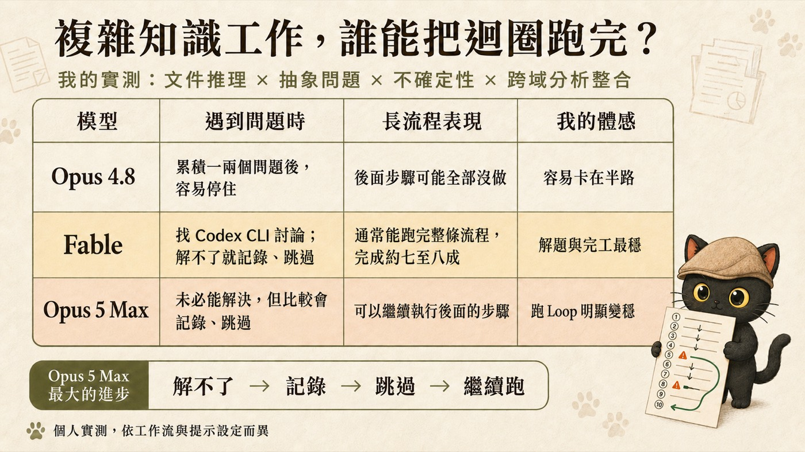

我把同一條有十個步驟的工作流程，交給三個不同的模型自己從頭跑到尾。以我這次的觀察，差異最明顯的地方是遇到解不了的那一步時，它接下來做什麼。
這篇整理我的實測體感，以及要在迴圈工程裡補上哪三件事，才能讓長流程真的跑得完。
- 已經在讓 AI 自己跑多步驟流程，但常常回來發現它停在中間的人
- 手上有好幾個模型可以選，不知道複雜任務該派給誰的人
- 想知道長流程要怎麼交代，AI 才不會卡在一個小問題上動不了的人
- 三種卡關反應的對照：停住、找人討論、記錄後跳過
- 一個判斷指標：長流程完工率，比單題分數更貼近實際使用
- 一段可以直接複製的長流程續跑指令
真實現場：一條有十個步驟的 Loop
我平常的工作方式不是一問一答。我會把一整條流程交給 AI，讓它從第一步跑到第十步，中間不要來問我，跑完再一次回報。
這種跑法的好處很直接：我可以把它丟下去跑，人離開電腦，回來再看結果。也正因為我人不在，中間出事沒人接手，這條流程能不能跑完，就變成一件很現實的事。
十個步驟裡面，通常會有一兩個是有點問題的。可能是我給的資料本身有盲點，可能是那一步比較抽象，模型無法確定該怎麼判斷。這是常態，不是意外。
所以我一開始就會交代清楚：如果有問題，你就寫工作日誌回報我，先跳過，把剩下的步驟整理好。
三種卡關反應
第一種：停在那裡等我
我用 Opus 4.8 跑同樣的長流程，以我這組提示與十步流程下的體感估計，有一半、甚至大概六成的機率會停掉。
停的位置很有規律。十個步驟裡假設有兩個有點問題、有盲點，或是比較抽象讓它無法確定，只有一個問題的時候它通常還能繼續做；一旦變成兩個，尤其第五步的問題又影響到後面的步驟，它就很高機率真的停下來，後面的都沒做。
我回來看到的畫面是：卡在第五格，第六到第十步是空的。即便我已經寫過「有問題就跳過」。
第二種：找另一個 AI 討論，解掉再繼續
Fable 我是這樣交代的：有問題就跟 Codex 討論，直接叫 Codex CLI 去討論，討論完沒問題就繼續做；真的有大問題，你寫工作日誌回報我，但先跳過，去執行後面的步驟。這個前提是我本來就配好了 Codex CLI 的存取權，也明確授權它可以去求助。
這樣跑，幾乎真的都可以全部執行完。
第五步有問題，它跟 Codex 討論完就把問題解決掉。第八步有問題，它可能再跟另一個模型討論完就解決掉。我回來看的時候，整條流程是走到第十步的，其中可以直接拿去用的結果大概七到八成，剩下真的解不掉的兩三個問題寫在回報裡等我處理。
這是我之前遇到複雜、抽象、不確定性高的任務，會直接指定 Fable 的原因。
- 讓兩個 AI 互相挑錯：我的企劃在送出前，先被模擬評審打了 2/5 分 同一份輸入讓兩家各自跑完再互審，這篇是把「找另一個 AI 討論」做成固定流程的完整版
- 交接指令：難的是決定不寫什麼 要讓它去問別的模型，交接那段話怎麼寫才不會越交代越糟
第三種：解不了就記錄、跳過、繼續跑
今天我拿同樣的跑法測 Opus 5 Max。我的體感是它跑 Loop 有變穩：比較常走到第十步，也比較常留下記錄。
但它穩的方式跟 Fable 不一樣。Fable 是遇到問題會去把問題解決掉；Opus 5 Max 我覺得它可能沒有辦法解決問題，比較穩定的是那件事解決不了的時候，它會跳過，繼續執行後面的步驟。
對我來說這個進步很有感。我要的是它解不掉的時候先把能做的做完，不要整條停住。解得掉當然更好，但那是加分項。

| 模型 | 遇到問題時 | 長流程表現 | 我的體感 |
|---|---|---|---|
| Opus 4.8 | 累積一兩個問題後，容易停住 | 後面步驟可能全部沒做 | 容易卡在半路 |
| Fable | 找 Codex CLI 討論；解不了就記錄、跳過 | 通常能跑完整條流程，完成約七至八成 | 解題與完工最穩 |
| Opus 5 Max | 未必能解決，但比較會記錄、跳過 | 可以繼續執行後面的步驟 | 跑 Loop 明顯變穩 |
Opus 5 Max 最大的進步，用一條動線講就是：
讓 AI 停下來的，常常是不確定
如果你只看單題能力，這三個模型的差異不會長成這樣。差距是在另一種情況下拉開的。
在我的長流程裡，讓 AI 停下來的那一步，常常不是技術上最難的那一步，而是判斷標準不足的那一步。難度跟不確定也可能同時出現在同一步，但它們是兩件事。
答案很複雜，但方向明確。可以硬算、可以查、可以拆成小步，做完知道自己做對了。
連「這樣算不算對」都沒有標準，需要有人拍板。做完也不知道自己做對了沒有。
我把這類情況看成缺少可以自我驗證的收斂條件：它做完也不知道自己做對了沒有。這種時候停下來問你，是一種合理的風險控制，因為它判斷不了繼續下去對不對。
麻煩的是，長流程裡的不確定會傳染。第五步無法確定，第六步吃第五步的結果，第七步又吃第六步的。這時候它面對的已經不只是一個小問題，是一整段建立在未確認基礎上的後續步驟。停下來，確實比往下亂跑安全。
但第三條路要設門檻，不然它會拿「待確認」當通行證。我的界線是：只有後面的工作可以用假設、分支或待確認欄位表示的時候才續跑；如果後面的動作會造成不可逆的變更、會對外送出，或者必須依賴那個唯一正確的值才能做，那一條分支就停下來記錄，不要帶著假設往下跑。
長流程完工率：我現在怎麼看模型
我現在看一個模型能不能接長任務，看的是這個指標。先把它定義清楚，免得跟品質混在一起：
這樣分開算，前面那兩個數字就不衝突了：Fable 那次是走完十步（完工率高），其中可以直接拿去用的大概七到八成（品質另計）。Opus 4.8 停在第五步，後面五步沒有結局，完工率就是掉在那裡。
實際操作上，十個步驟的流程，中間放進一兩個解不了的問題，回來看四件事：
- 它跑到第幾步停在中途，還是走到最後一步。
- 有沒有把解不了的地方記下來卡在哪、卡什麼、試過什麼。
- 有沒有繼續把後面能做的做完不因為一步卡住就整條放棄。
- 最後有沒有一次講清楚哪些做了、哪些沒做、哪些要我拍板。
單題分數高，代表它每一步的品質好。長流程完工率高，代表你可以把事情交給它、離開電腦。這是兩種不同的能力，對我這種把 AI 當工作流引擎的人來說，第二種更貼近實際使用。
這也連到我之前算 AI CP 值的那個結論：真正該問的是這次的任務需要幾分，哪個模型最強反而排在後面。長流程要的那一分，就是完工率。
迴圈工程要補的三件事
模型行為會變，這是好消息也是壞消息。好消息是它一直在進步；壞消息是你不能把完工率賭在模型的預設行為上。迴圈工程要做的，是把完工率寫進流程裡，讓它不隨模型版本浮動。
我在自己的 Loop 裡補了三件事。
一、把記錄、跳過、續跑寫成明文規則
不要只說「有問題就跳過」。要把怎麼記、記在哪、跳過之後做什麼，全部寫清楚。我的設計假設是：它停下來，有一部分原因是不知道跳過這個行為到底被允許到什麼程度。
二、給它一個可以問的對象
Fable 那次能把問題解掉，我認為關鍵在於我給了它一個可以討論的對象，讓它去叫 Codex CLI 討論。這件事在流程設計上叫換一顆腦，靠的是分工。
一個模型解不掉的抽象問題，換一家的模型看，有時候能提供不同的判斷角度。這也是我平常跨家審稿的做法：產出的跟主審的不是同一家。這篇文章本身就是這樣跑的，我寫完之後交給 Codex 審，它抓到四個問題我改在上面。把這件事做成固定流程的完整版，在讓兩個 AI 互相挑錯那篇。
三、卡關要有停止條件
讓它跳過不等於讓它硬幹。我的規則是同一個問題卡超過一定次數或時間就跳過、記錄、往下走，不要在原地反覆嘗試。這件事要寫死在流程裡，否則它會把你所有的時間用在一個步驟上，這也是一種跑不完。
可以直接複製的長流程續跑指令
這段是我交代長流程時的核心段落，你可以直接改成自己的版本：
這條流程有 N 個步驟：［貼上第 1 步到第 N 步，每一步寫預期產出］
工作日誌寫在：［檔案或位置］
可以動用的工具與權限：［列出來，以及哪些資料不准外送］
每一步的上限：最多嘗試 2 次，或 15 分鐘
請一次從第 1 步跑到第 N 步，中間不要停下來問我。
遇到問題照這個順序處理：
1. 先自己試著解決，同一個問題最多嘗試 2 次、不超過時間上限。
2. 解不掉就換一顆腦：在不外送未授權資料的前提下，
把問題摘要、已經試過什麼、需要判斷的選項交給另一個模型討論
（例如叫 Codex CLI），討論後能解決就繼續做。
3. 還是解不掉就記錄下來，寫進工作日誌，欄位包含：
卡在第幾步、卡什麼、影響到後面哪些步驟、你嘗試過什麼、
有哪些可選的處理方向、需要我判斷什麼。
4. 記錄完就跳過這一步：
- 不依賴這一步的後續步驟，照原計畫做完。
- 依賴這一步的後續步驟，只有在能明確標示「待確認」或建立分支假設時
才繼續，並寫出你用了什麼假設、影響哪些產出。
- 如果沒辦法安全地建立假設，那一條分支就停下來記錄，不要硬做。
以下動作一律不准自己決定：不可逆的刪除或覆寫、對外送出、花錢、
改權限或設定、外送未授權資料，以及任何我沒授權的破壞性操作。
碰到紅線就停這個動作跟所有直接依賴它的步驟；其他不相干、
只讀不寫的步驟可以繼續做完。
全部跑完後一次回報，分開寫清楚：
- 已完成的步驟與產出位置
- 跳過或停下的步驟與原因
- 目前帶著跑的待確認假設，以及受影響的產出
- 需要我拍板的判斷點，附選項與你的建議那段紅線不能省。讓 AI 自己跑完整條流程的前提，是它知道哪幾件事永遠不准自己跑。第 4 點的分支規則也不能省，否則它會拿「待確認」當通行證，把整條流程建在一個沒人確認過的假設上。
它保證什麼、不保證什麼
這篇是我的個人實測，講清楚邊界比講結論重要。
- 這是我在自己的工作流上，用同一條長流程跑出來的體感差異
- 這三種反應是我在自己流程裡觀察到的模式；你能不能複現，要看版本、提示、工具權限與任務結構
- 那段續跑指令是我實際在用的，可以直接拿去改
- 我給的是體感機率，不是統計數據。一半到六成會停，是我自己跑下來的感覺，沒有做成量化實驗
- 模型行為會隨版本、提示設定、工作流結構改變
- 我測的是 Opus 5 Max。Opus 5 High 跑 Loop 會不會有同樣結果，我還沒測，這是我接下來要試的
- 三個模型的流程配置不對等（Fable 那次多了求助 Codex CLI 的授權），所以這不能當成模型能力排名
如果你要拿這篇當選模型的依據，我建議的做法是自己跑一次：拿你真實的十步流程，中間本來就有那一兩個你知道會卡的地方，同一份交代丟給不同模型，看它們回來的樣子。要找出最適合自己流程的配置，自己這一次測試通常比通用評測更有參考價值。
把 Loop 設計成跑得完的樣子
我每月固定舉辦兩場免費線上講座，主題輪流談怎麼把工作流程、判斷、經驗，整理成 AI 能靈活運用的提示詞、技能包與知識庫。想收到開課通知，或想討論自己的長流程卡在哪一步，都歡迎先從社群開始。
免費講座場次會先在這裡公布，也可以把你卡住的那條流程拿出來一起看。
加入社群 ↗